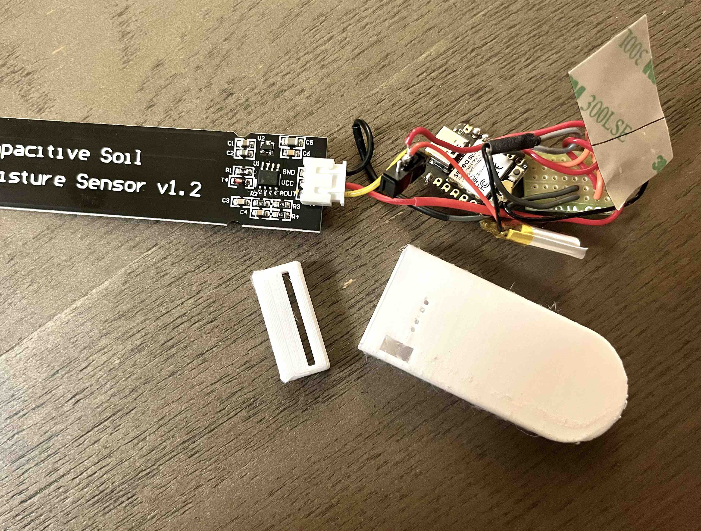
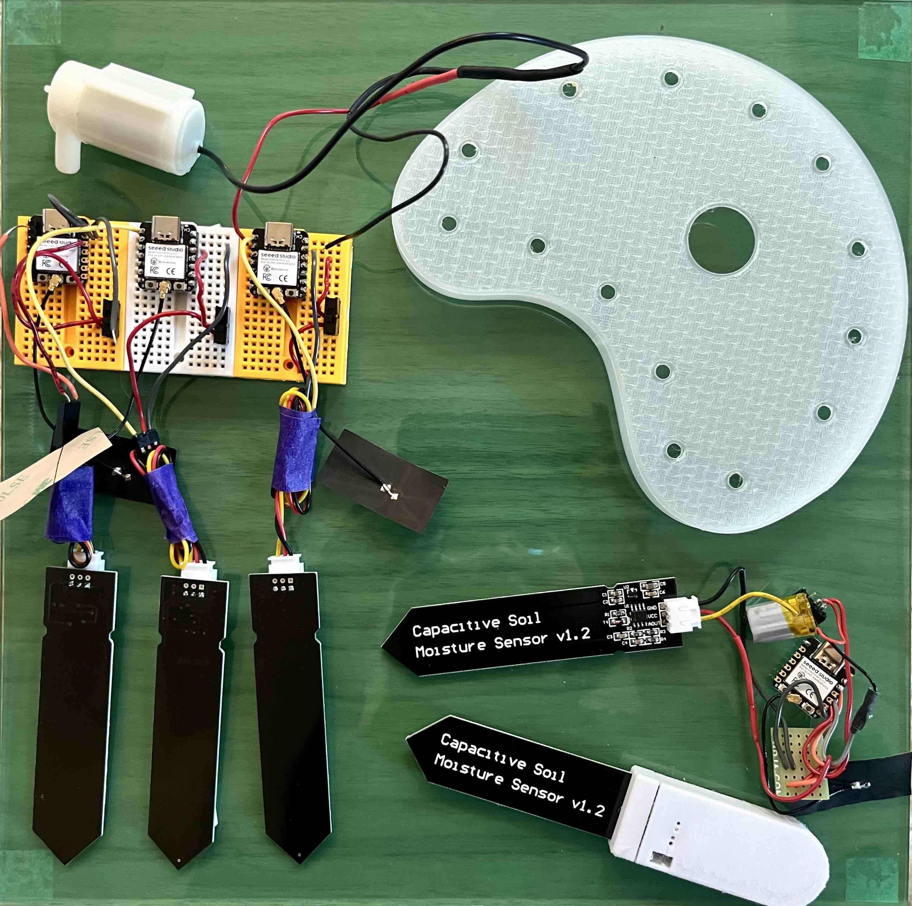
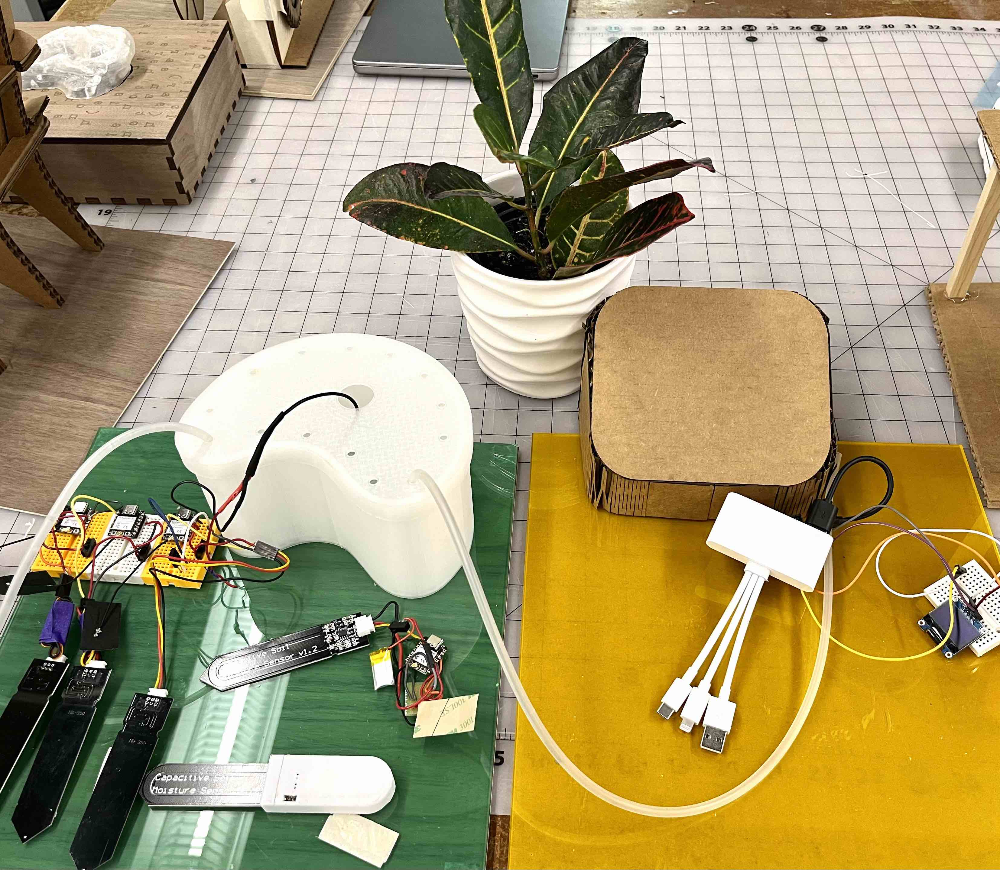
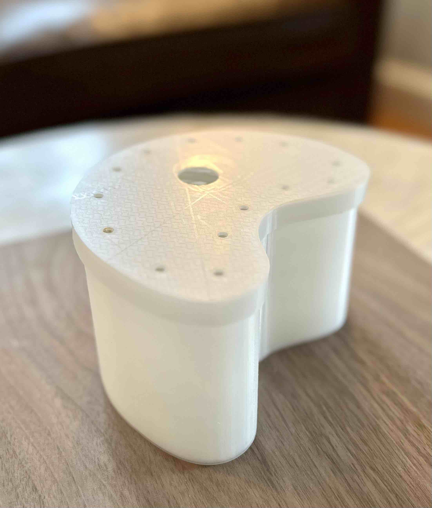

<br>
<h4>Home Garden Hub</h4>
<br>
<h5>Video of version 1.0</h5>
<iframe class="largevideo" src="https://www.youtube.com/embed/ozb4q3AXcUU" title="YouTube video player" frameborder="0" allow="accelerometer; autoplay; clipboard-write; encrypted-media; gyroscope; picture-in-picture; web-share" allowfullscreen></iframe>
<br>
<br>

<figcaption>Soldered prototype of the plant bud sensor. I was able to reduce the footprint of it but not to fit into the casing yet. I think I will need to do this again with less wiring as they do make the unit bulky.</figcaption>

<figcaption>Prototypes of the soil sensors. Needed multiples of them in order to test the ability to add and provision additional sensors.</figcaption>

<figcaption>Complete system, minus the webapp which was displayed using an iPad.</figcaption>

<figcaption>Fully printed water tank. Loved how it turned out and do think the real version would need to be almost twice as tall, as originally conceived.</figcaption>